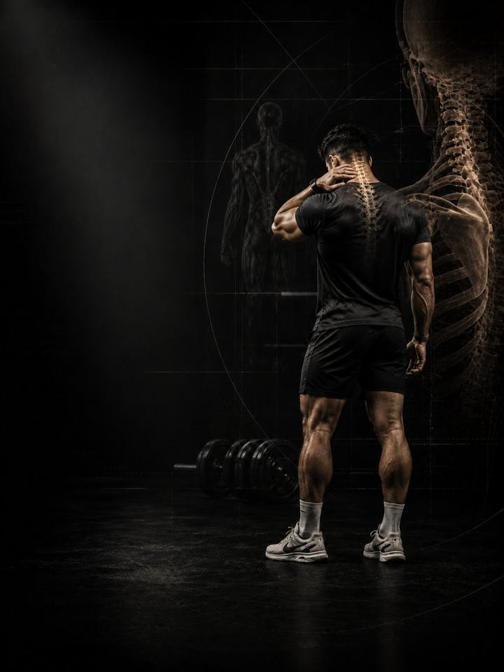

Neck Pain
Take the load off the neck by building the mid-back and shoulders that should have been carrying it.
- Built fordesk-bound necks that burn by evening and bring on tension headaches
- Schedulea 10–15 minute daily routine, plus 3 strength days a week
- Equipmentdaily routine needs a mat and a band. Strength days need a full gym.
- Formatmobile PDF, every exercise linked to a demo video
The store opens soon. For now, Buy opens an Instagram message and you receive the PDF there.
Why neck pain keeps coming back
The neck holds up a head that weighs about five kilograms, and it does that job well until the mid-back stiffens, the shoulders round forward and the head drifts out in front of the body. Then the same muscles work all day without a break. By evening they burn, ache and pull headaches up the back of the skull.
Stretching them feels good for ten minutes and changes nothing, because tightness here is a sign of overwork, not the cause. Nothing about it is a moral failing either. Plenty of people sit badly and feel fine. What matters is how long a position is held, and how little the surrounding muscle can support it. This program rebuilds the deep neck strength and mid-back support that let those muscles finally switch off.
Your week
A short daily routine, plus three strength days at the gym. Any three days work, as long as they are not back to back. One example:
| Sun | Mon | Tue | Wed | Thu | Fri | Sat |
|---|---|---|---|---|---|---|
| Day 1 + daily routine | Daily routine | Day 2 + daily routine | Daily routine | Day 3 + daily routine | Daily routine | Daily routine |
How it runs:
- Test first. Four tests before week 1, repeated after weeks 3 and 6.
- Daily routine, 10–15 min. Seven movements, every day. On strength days it doubles as the warm-up.
- Strength days. Days 1, 2 and 3, done in order, training the neck and upper back.
The five patterns behind most neck pain
These five patterns overlap heavily, and most desk-bound necks show three at once. Fix the support and the position takes care of itself.
-
Head drifting forward. Every centimetre the head drifts forward adds to the work the muscles at the back of the neck do to hold it up. Hold that for eight hours and the muscles at the base of the skull never rest, which is exactly where tension headaches start. In the program: Resisted Chin Tucks, Neck Isometrics, Carries
-
Weak deep neck flexors. The small muscles at the front of the neck are meant to hold the head stacked. When they tire, the big surface muscles take over a job they were never designed for, and they let you know about it by mid-afternoon. In the program: Resisted Nods, Chin Tucks, Neck Isometrics
-
Overloaded upper traps. The tops of the shoulders end up holding the shoulder blades, the arms and half the head. They feel permanently tight because they are permanently working, and no amount of stretching outpaces eight hours of load. In the program: Prone Y Raise, Face Pulls, Farmers Carry
-
Rounded shoulders. A short chest and a quiet mid-back let the shoulders drift forward, and they drag the head with them. The neck then works against a base that has already given up. In the program: Chest Stretch, Band Pull-Aparts, Rows
-
Stiff mid-back. When the mid-back won't extend or rotate, the neck borrows the movement. Every turn of the head and every reach overhead takes range from a segment that has already given all it has. In the program: T-Spine Opener, Thread the Needle, Wall Thoracic Rotation
Your pattern adds. The PDF lists extra exercises for each pattern. Add the ones for the patterns that sound most like you at the end of each strength day, at 3 sets each.
How the 6 weeks progress
The daily routine stays the same for all six weeks. The strength days move up a level every two weeks.
| Weeks 1–2 | Weeks 3–4 | Weeks 5–6 | |
|---|---|---|---|
| Phase | Control | Build | Integrate |
| Focus | Isometrics (holds) and control | Loaded rows and presses | Loaded and upright: carries |
| Working sets per week | 54 | 54 | 54 |
In weeks 1–2 every load is bodyweight, band or light, and the sets are not effort-rated. Effort is set by control and the pain rules. The first rated loads come in weeks 3–4, at an average effort of about 6 out of 10, rising to 6.3 in weeks 5–6. That scale is RPE, a 1–10 rating of how hard a set feels: 6 leaves about 4 reps in the tank, and 6.3 leaves about 3 to 4.
The rules that make it work
- The work climbs as the neck earns it. Isometrics and control first, then rows and presses, then carries. Each phase lasts two weeks.
- The daily routine is the medicine. The strength days are the training. The routine does not change, so it can do its job every day.
- Keep training. The PDF has swaps for the lifts that drive the head forward, so you don't have to stop everything while the neck settles.
- Decisions follow numbers. You retest after weeks 3 and 6.
How you'll measure progress
Four tests before week 1, then again after weeks 3 and 6, recorded on the score sheet in the PDF. They track the things that matter here, such as a deep neck flexor hold and a wall angel.
What good progress looks like
- Weeks 1–2: the afternoon burn eases and headaches become less frequent.
- Weeks 3–4: the deep neck flexor hold gets longer and rotation opens up.
- Weeks 5–6: carries feel easy, and the head sits back without you thinking about it.
If nothing has moved by the week 3 retest, get a professional assessment instead of pushing harder.
Finishing standard at week 6: 2/10 pain or less at the end of a working day for two straight weeks, a deep neck flexor hold past 30 seconds, and a wall angel to overhead without the low back or head leaving the wall.
Break the position
The neck does not get overloaded in the gym. It gets overloaded in the eight hours before you get there. Do one reset every hour you spend at a desk or on a phone: stand, tuck the chin, roll the shoulders back and take three slow breaths. Thirty seconds. Protect the two free painkillers as well: 7–9 hours of sleep and managed stress. Use one supportive pillow, not two stacked.
The science
Every program in the library is built on published research, and how strong that research is gets stated, not implied. Where the evidence is limited, the page says so.
| Finding | Source | What it does not show |
|---|---|---|
| Strength training cuts sports injuries to under a third of the control rate. Stretching does not reduce them. | Lauersen, Bertelsen & Andersen, British Journal of Sports Medicine 2014. Meta-analysis of 25 randomised trials, 26,610 participants. PMID 24100287 | Risk ratio 0.32 for strength training and 0.96 for stretching. The trials varied a lot, and dose was not standardised. |
| Every sensible prescription beats not training. Heavier loads rank highest for strength. | Currier, McLeod, Banfield et al., British Journal of Sports Medicine 2023. Network meta-analysis, 178 strength and 119 hypertrophy studies. PMID 37414459 | The differences between prescriptions were small, and all of them worked. |
| Strength keeps improving as weekly sets rise, with diminishing returns. Training more often reliably helps strength. | Pelland, Remmert, Robinson, Hinson & Zourdos, Sports Medicine 2025. Meta-regressions, 67 studies, 2,058 participants (79% male). PMID 41343037 | How sets were counted (direct or indirect) changes the numbers considerably. |
What's next
After 6 weeks:
- The shoulders need work too: Shoulder & Scapular
- Build strength and muscle: Foundation Strength
- Train like an athlete: Athletic Development
- Another area needs work: the Corrective series
Before you buy: get cleared first if
- You have chest pain, unusual breathlessness, palpitations or dizziness with exertion.
- You have uncontrolled high blood pressure, a known heart condition, or recent surgery.
- You are pregnant or recently post-partum. Get clearance and a tailored program first.
- Your pain started with a specific injury (a pop, the joint giving way, or swelling within hours), or you have numbness, weakness, fever or pain that wakes you at night.
This program is general fitness guidance. It does not replace a medical assessment.
The store opens soon. For now, Buy opens an Instagram message and you receive the PDF there.